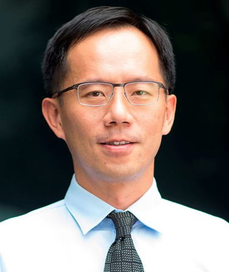

Associate Professor of Computer Science, School of Computing and Information Systems
Urban Fellow, Urban Institute
Singapore Management University
Office 4031, SCIS (map)
80 Stamford Road, Singapore 178902
Phone: +65 6828-0526
|  |
Cheng, Shih-Fen Associate Professor of Computer Science, School of Computing and Information Systems
Office 4031, SCIS (map) |
|
BioShih-Fen Cheng is an Associate Professor of Computer Science at the Singapore Management University. He received his Ph.D. degree in industrial and operations engineering from the University of Michigan, Ann Arbor, and B.S.E. degree in mechanical engineering from the National Taiwan University. His research focuses on the modeling and optimization of complex systems in engineering and business domains, with application in the areas of urban computing and human decision-making. He is particularly concerned about the real-world impact of his research, as illustrated by his recent research on taxi and ride-hailing industry. His research outputs and deployed system have received prestigious international awards from CIKM, AAMAS, and INFORMS. He regularly publishes in top AI conferences such as IJCAI, AAAI, and AAMAS; he also publishes widely in journals such as Transportation Science, ACM Transactions on Intelligent Systems and Technology, IEEE Transactions on Intelligent Transportation Systems, and IIE Transactions. He is long-time members of INFORMS, AAAI, and IEEE, and serves as Senior Editor for Electronic Commerce Research and Applications.News
|
|
Visitor
Last Modified: |